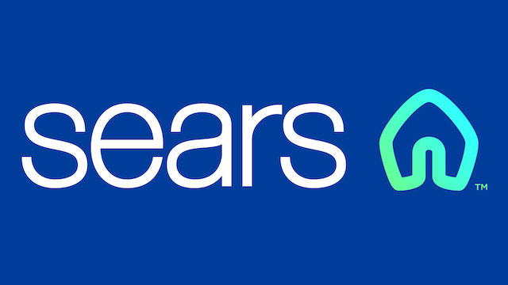
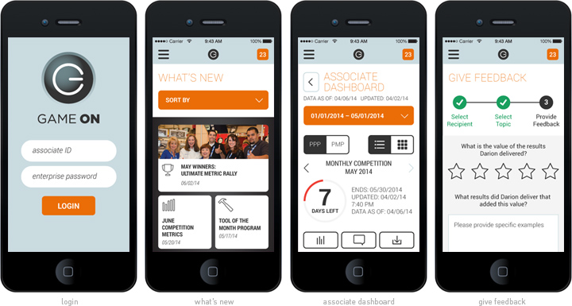
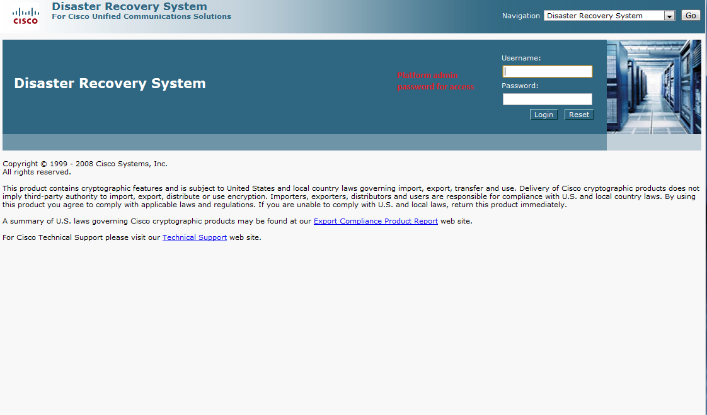

Sears & Kmart
sears.com & kmart.com cloud migration
Moved flagship eCommerce sites to AWS and modernized data lakes on GCP.
I'm a technology executive with 20+ years building and scaling engineering, infrastructure, cybersecurity and analytics organizations — from Fortune 500 retail to fast-growing healthcare. I turn technology investments into growth, efficiency and better customer experiences.
I own the full technology landscape — engineering, IT, infrastructure, security and data — and partner with executive leadership to align it with business goals, compliance and customer experience.
Modernizing operations and platforms across healthcare, retail and eCommerce.
Led AWS migration of sears.com and kmart.com and GCP data-lake modernization.
Practical AI and ML, BI platforms and automation that improve decision-making.
Securing pharmacy IT systems, data centers and eCommerce platforms.
Scalable, highly available distributed systems with Python, Java/JEE and Angular.
Building high-performing, cross-functional teams across onsite and offshore locations.
I focus on practical AI: choosing the right models, connecting them safely to real workflows, and measuring whether they pay off. In regulated industries like healthcare, governance and security come first.
Finding high-value use cases, building the business case, and taking AI from pilot to production at enterprise scale.
Comparing large language models on quality, cost, speed and lifecycle, and benchmarking them against real workloads.
Connecting AI agents to enterprise systems through APIs and the Model Context Protocol (MCP), with least-privilege access.
Responsible AI in regulated environments: data privacy, access controls, prompt-injection defenses and human review.
Rolling out AI coding assistants across engineering teams to ship faster while keeping review and quality standards high.
The pipelines, analytics and machine learning that make AI dependable: clean data, observability and measurable outcomes.
Two decades from writing code for Cisco's call manager to running technology for a national pharmacy group.
Responsible for enterprise Engineering, IT, Cybersecurity, Infrastructure, Data and Digital Transformation strategy. Leading modernization around scalable healthcare platforms, cloud, analytics, automation and AI-enabled operations, overseeing teams across software engineering, infrastructure, IT operations, analytics and vendor ecosystems.
Led engineering across technology, infrastructure, IT security, analytics and data for a fast-growing pharmacy chain — securing and scaling eCommerce, pharmacy IT systems and data centers.
Led Online eCommerce, Mobile Apps and Asset & Profit Protection engineering for Sears brands, owning applications, infrastructure, reporting and data.
Built and led the India engineering organization for eCommerce and Asset & Profit Protection — cloud transformation, Agile adoption and automation at scale.
Led cross-functional product teams through AWS/GCP migrations, Agile adoption and ML integration.
Led product teams in the Sears Member Technology Group — cloud migration, architecture modernization, data analytics and in-house mobility.
Owned technology, AI/ML and data for Asset & Profit Protection — fraud detection, R&D and business intelligence.
Designed GameOn (gamified associate performance), Segno (eLearning platform) and an enterprise analytics & BI platform.
Architected the omnichannel Mobility and Web-services platform across mobile, tablet, desktop, kiosks and scanners; delivered fieldandstreamshop.com on webMethods REST services and IBM WebSphere Commerce.
Lead developer on Cisco's VoIP disaster recovery system in Java and Python.
Platforms I've led, architected or built along the way.

Moved flagship eCommerce sites to AWS and modernized data lakes on GCP.
Web services behind the loyalty program at the core of Sears' recovery strategy.
Multi-device storefront and REST services for mobile, kiosk and scanner.

Stores and associates compete on P&L, sales, shrink, safety and learning.
SOAP administration interface and secure call-manager data streams.

Backup and recovery for Cisco's VoIP call manager platform.
Marian Engineering College, Trivandrum · 2002 – 2006
Open to conversations about leadership, advisory and speaking.